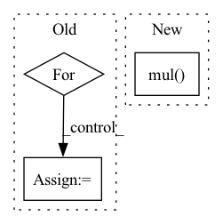

Pattern ID :25780
Before Change
edge_slice = edge.get_edge_slice()
neighbors_slice = edge.get_start_node_neighbors_without_end_node()[0]
messages_from_the_other_neighbors = to.zeros(node.features.shape[0]).to(self.device)
for reset_node_index in neighbors_slice:
reset_node = self._create_node(node_features, adjacency_matrix, reset_node_index)
reset_edge = self._create_edge(node, reset_node)
reset_edge_slice = reset_edge.get_edge_slice()
reset_gate_output = self._pass_through_reset_gate(messages, node, reset_edge, node_features)After Change
node_features: to.Tensor) -> to.Tensor:
edge_slice = edge.get_edge_slice()
neighbors_slice = edge.get_start_node_neighbors_without_end_node()[0]
return self.u_gru_current_memory_message[edge_slice].matmul(sum([to.mul( to.sigmoid(
to.add(
to.add(self.w_gru_update_gate_features[edge_slice].matmul(node_features[node.node_id]),
self.u_gru_update_gate[edge_slice].matmul(messages[node.node_id, reset_node_index])),
self.b_gru_update_gate)).long(), messages[node.node_id, reset_node_index])
for reset_node_index in neighbors_slice]))
def _pass_through_reset_gate(self,
messages: to.Tensor,In pattern: SUPERPATTERN
Frequency: 3
Non-data size: 3
Instances Fragment ID: 78014471
Project Name: kovanostra/message-passing-neural-network
Commit Name: 46b48a64ed3b792489f1ffde06ae212a7af5471a
Time: 2020-05-02
Author: kovanostra@gmail.com
File Name: message_passing_nn/model/graph_encoder.py
M Class Name: GraphEncoder
N Class Name: GraphEncoder
M Method Name: _keep_or_reset_messages(5)
N Method Name: _keep_or_reset_messages(6)
M Parent Class: nn.Module
N Parent Class: nn.Module
M File Name: message_passing_nn/model/graph_encoder.py
N File Name: message_passing_nn/model/graph_encoder.py
M Start Line: 198
M End Line: 208
N Start Line: 203
N End Line: 210
Before Change
edge_slice = edge.get_edge_slice()
neighbors_slice = edge.get_start_node_neighbors_without_end_node()[0]
messages_from_the_other_neighbors = to.zeros(node.features.shape[0]).to(self.device)
for reset_node_index in neighbors_slice:
reset_node = self._create_node(node_features, adjacency_matrix, reset_node_index)
reset_edge = self._create_edge(node, reset_node)
reset_edge_slice = reset_edge.get_edge_slice()
reset_gate_output = self._pass_through_reset_gate(messages, node, reset_edge, node_features)
messages_from_the_other_neighbors += to.mul(reset_gate_output, messages[reset_edge_slice])
return self.u_gru_current_memory_message[edge_slice].matmul(messages_from_the_other_neighbors)After Change
node_features: to.Tensor) -> to.Tensor:
edge_slice = edge.get_edge_slice()
neighbors_slice = edge.get_start_node_neighbors_without_end_node()[0]
return self.u_gru_current_memory_message[edge_slice].matmul(sum([to.mul( to.sigmoid(
to.add(
to.add(self.w_gru_update_gate_features[edge_slice].matmul(node_features[node.node_id]),
self.u_gru_update_gate[edge_slice].matmul(messages[node.node_id, reset_node_index])),
self.b_gru_update_gate)).long(), messages[node.node_id, reset_node_index])
for reset_node_index in neighbors_slice]))
def _pass_through_reset_gate(self,
messages: to.Tensor, Fragment ID: 78014478
Project Name: kovanostra/message-passing-neural-network
Commit Name: 46b48a64ed3b792489f1ffde06ae212a7af5471a
Time: 2020-05-02
Author: kovanostra@gmail.com
File Name: message_passing_nn/model/graph_encoder.py
M Class Name: GraphEncoder
N Class Name: GraphEncoder
M Method Name: _keep_or_reset_messages(5)
N Method Name: _keep_or_reset_messages(6)
M Parent Class: nn.Module
N Parent Class: nn.Module
M File Name: message_passing_nn/model/graph_encoder.py
N File Name: message_passing_nn/model/graph_encoder.py
M Start Line: 198
M End Line: 208
N Start Line: 203
N End Line: 210
Before Change
os.makedirs(self.image_save_path)
toPIL = transforms.ToPILImage()
for i, image in enumerate(fake_images):
image = image.mul(0.5).add(0.5)
image = toPIL(image)
image.save(os.path.join(self.image_save_path, "{}.png".format(i)))
After Change
if not os.path.exists(self.image_save_path):
os.makedirs(self.image_save_path)
fake_images = fake_images.mul( 0.5) .add(0.5).cpu()
image_grid = utils.make_grid(fake_images, nrow=self.save_row_number)
utils.save_image(image_grid, os.path.join(self.image_save_path, "{}_fake_images.png".format(self.cfg.PROJECT_NAME)))
Fragment ID: 78014474
Project Name: luzhixing12345/anime-wgan
Commit Name: 0a8816f8a7e456f3393ccf2f0468adecf03b24b3
Time: 2022-05-09
Author: luzhixing12345@163.com
File Name: model/BaseModule.py
M Class Name: BasicGAN
N Class Name: BasicGAN
M Method Name: generate_images(1)
N Method Name: generate_images(1)
M Parent Class: nn.Module
N Parent Class: nn.Module
M File Name: model/BaseModule.py
N File Name: model/BaseModule.py
M Start Line: 71
M End Line: 85
N Start Line: 86
N End Line: 94
Before Change
seq: List[torch.Tensor] = seq[1:]
g = torch.zeros_like(X)
if self.grad_method == "nes":
for x in seq:
g += f(x) * (x - X)
elif self.grad_method in ["sgd", "hess"]:
for x in seq:
g += (f(x) - f(X)) * (x - X)After Change
seq = seq[1:]
noise = seq.sub(X)
g = f(seq, reduction="none")[:, None, None, None].mul( noise) .sum(dim=0)
if self.grad_method in ["sgd", "hess"]:
g -= f(X) * noise.sum(dim=0)
g /= len(seq) * self.sigma * self.sigma Fragment ID: 78014472
Project Name: ain-soph/trojanzoo
Commit Name: bc3d366258b45942115b6b86ae8466dac52ac154
Time: 2020-06-30
Author: ain-soph@live.com
File Name: trojanzoo/optim/pgd.py
M Class Name: PGD
N Class Name: PGD
M Method Name: calc_seq(3)
N Method Name: calc_seq(3)
M Parent Class: Optimizer
N Parent Class: Optimizer
M File Name: trojanzoo/optim/pgd.py
N File Name: trojanzoo/optim/pgd.py
M Start Line: 182
M End Line: 191
N Start Line: 182
N End Line: 189